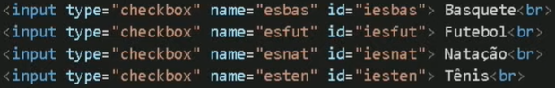
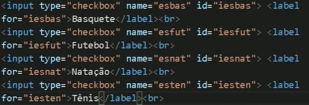
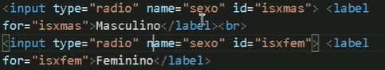

Para criar um formulário, use: <form>
Para criar caixas de entrada de dados, dentro do form, use: <input>. Dentro do input existem algumas informações a serem especificadas. Será visto no próximo tópico.
Para usar o input, use: <input type="[parâmetro]" name="[informação]" id="[informação]">
O parâmetro é para especificar que tipo de entrada vamos ter, por exemplo:
value="[mensagem]".Se quiser escrever alguma coisa dentro da caixa do input, dentro de <input>, use: placeholder="[mensagem]"
Referência do tópico:
Para tornar o input obrigatório, dentro da tag <input>, use: required
Exemplo: <input required>
Também pode limitar o tamanho de um input. Para isso, dentro de <input>, use: minlength ou maxlength
Para linkar a caixa (input) com o texto de referência, use: <label for="[id]">
Se quiser desligar o efeito abaixo, dentro de form, use: autocomplete = "off"
O autocomplete dentro de form é algo mais geral. Para usar autocomplete especificando o input, dentro de <input>, use: autocomplete="[tipo de autocomplemento]"
Nesse caso, dentro de input, aparecem diversas opções diferentes de on e off.
Para enviar o formulário, dentro de form, use: action= "[para onde vai enviar]"
Por exemplo: <form action="cadastro.py">
Para adicionar um método, use: <method: "[parâmetro]";>
Parâmetros:
Para proteger os dados, será necessário criptografar e usar os dados HTTPS. Isso não será visto aqui. Então, aprender sobre HTTPS.
Para inserir um número no input, use: <input type="number">
Nesse caso, os números são inteiros. Para mudar isso, dentro do input, use: step="[pulo dos valores numéricos]"
Para inserir um input de mês/ano, use: <input type="month">
Para inserir um input de dia/mês/ano, use: <input type="date">
Para inserir um input de hora. use: <input type="time">
Você pode envelopar os itens do formulário com <fieldset> para criar um campo.
Exemplo abaixo:
Caixas para marcar. PODE SER MÚLTIPLOS. Para isso, use: <input type="checkbox">
Obrigatório colocar name e id para eles. Para caso a tela seja pequena, como em celular. Aí clicar no box fica dificil, podendo assim associar um label. Obeserve abaixo:
Com label:
Caixas para marcar. Mas, diferentemente do CheckBox, NÃO PODE SER MÚLTIPLOS, APENAS UM. Para isso, use: <input type="radio">
Obrigatório colocar name, id e value (value é importante para o .php saber qual caixa se trata) para eles. Para caso a tela seja pequena, como em celular. Aí clicar no box fica dificil, podendo assim associar um label. Obeserve abaixo:
Aqui temos uma particularidade especifica. Como só devemos marcar um, o name deve ser o mesmo, compartilhado entre eles, como na imagem abaixo:
